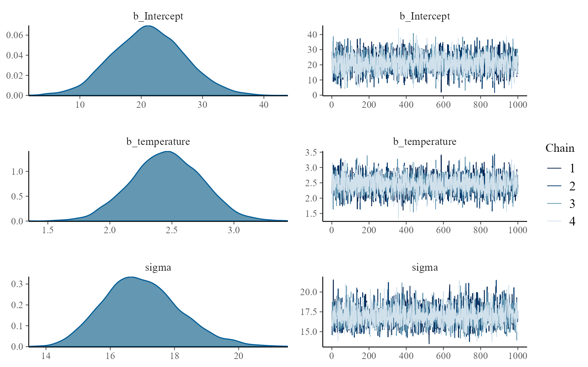
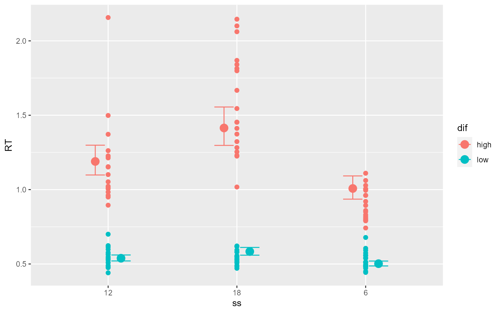
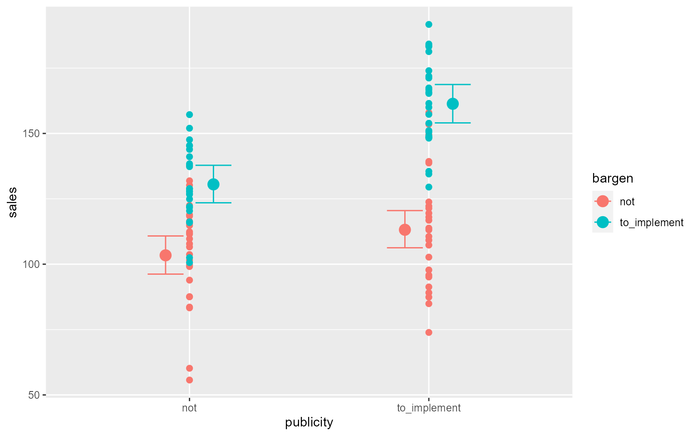
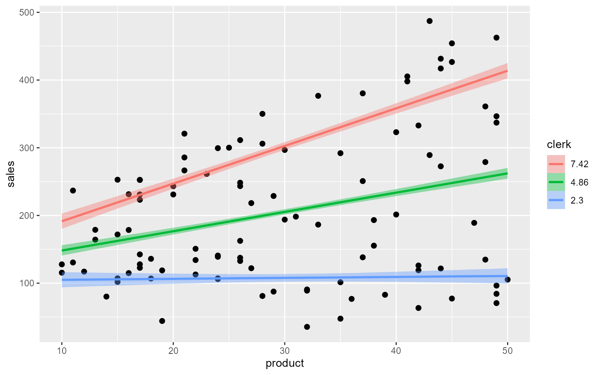

3部
3-1章: 一般化線形モデルの基本
1. 目的と概要
- 一般化線形モデル(GLM): 実践的モデル & 複雑なモデルの部品
- 確率分布、線形予測子、リンク関数
- リファレンス的に使える章
2. 複雑なモデルを構築する際の手続きの標準化
- モデルをどう構築するか
- ビールの売り上げの例
- \(y \sim Normal(\mu,\sigma^2)\)
- これを複雑にしようとしたとき、“勝手に”やるばかりだと非効率かも
- 「モデルの方」「フレームワーク」
- 一般化線形モデルにおけるモデルの変更手続き
- 確率分布を変える
- 線形予測子を変える
- リンク関数を変える
3. 確率分布・線形予測子・リンク関数
- 確率分布
- 観測データを生む確率的過程を表現するためのもの。データに合わせて変える。
- ビールなら正規分布
- 小動物の数ならポアソン分布
- 購入比率なら二項分布
- 観測データを生む確率的過程を表現するためのもの。データに合わせて変える。
- 変数
- 応答変数・従属変数
- 説明変数
- 線形予測子
- 説明変数の線型結合
- リンク関数
- 応答変数と線形予測子を関係付けること
4. 一般化線形モデルの例: 説明変数が無く、正規分布を仮定するモデル
- ビール売り上げの例
- 凡例
- \(y_i\):売り上げデータ
- \(\mu_i\): \(y_i\)の期待値
- \(_i\): 何番目のデータか
- \(g\): 恒等関数（\(g(y)=y\)となる関数=何も起きない関数）
- 一般化線形モデル
- \(g(\mu_i)=\beta_0\)
- \(y_i \sim Normal(\mu, \sigma^2)\)
- \(\beta_0\)が線形予測子、恒等関数\(g()\)がリンク関数
- 書き換え
- \(\mu_i=\beta_0\)
- \(y_i \sim Normal(\mu, \sigma^2)\)
- 従属変数の平均値\(\mu_i\)が値\(\beta_0\)をとることを想定したモデル
- 凡例
5. 単回帰モデル: 説明変数が1つだけあり、正規分布を仮定するモデル
- ビールの売り上げが気温\(x\)によって変化するというモデル
- \(g(\mu_i)=\beta_0+\beta_1x_i\)
- \(y_i \sim Normal(\mu_i, \sigma^2)\)
- \(\beta_0+\beta_1x_i\)が線形予測子、恒等関数\(g()\)がリンク関数
- 書き換え
- \(\mu_i = \beta_0 + \beta_1x_i\)
- \(y_i \sim Normal(\mu_i, \sigma^2)\)
- 気温\(x\)が1変化すると\(\beta_1\)増減する
- 単回帰モデル
- \(\beta_0\)を切片
- \(\beta_1\)を\(x\)の係数・傾き
- 単回帰モデルを使うことで..
- 説明変数と従属変数の関係の考察
- 従属変数の予測
6. 分散分析モデル：ダミー変数を利用するモデル
- 説明変数が質的変数のとき
- ダミー変数を使う必要性
- ダミー変数：0 / 1
- 晴れ・雨・曇りを表現する
- 晴れ：0/1
- 雨: 0/1
- 状態-1の変数
- 1 0 -> 晴れ
- 0 1 -> 雨
- 0 0 -> 曇り
- ダミー変数を使う必要性
- ビールの例
- 売上が天気の影響を受ける
- \(x_1\):晴れなら1, \(x_2\): 雨なら1, \(g()\): 恒等関数
- \(g(\mu_i)=\beta_0+\beta_1x_{i1}+\beta_{i2}\)
- y Normal(_i, ^2)
- 書き換え
- \(\mu_i=\beta_0+\beta_1x_{i1}+\beta_{i2}\)
- 分散分析モデル
- 説明変数が質的データ
- 確率分布として正規分布
- \(x_1\):晴れなら1, \(x_2\): 雨なら1, \(g()\): 恒等関数
- 売上が天気の影響を受ける
7. 正規線形モデル：正規分布を仮定するモデル
- 単回帰モデルも分散分析モデルも含まれる
- リンク関数は恒等関数
- 確率分布は正規分布
- 説明変数は量的だけ（単回帰モデル）、質的だけ（分散分析モデル）、両方とも（？）
8. ポアソン回帰モデル
- 魚の釣果尾数のモデル化
- あまり釣れないし生の数のみ、ポアソン分布に従う
- 分布のパラメータ\(\lambda\)は気温と天気の影響を受ける
- \(p(y_i|\lambda_i)=\frac{\lambda_i^{y_i} exp(-\lambda_i)}{y_i!}\)
- ここから、ちょっと馬場本の式3.10,
3.11が分かりにくく感じたので、緑本p159の説明順を参考に表現を変えます。なんでexp()なのか、logなのかの説明がなくて分からない。
- パラメータ\(\lambda\)が次の式に従うとする
- \(\lambda_i = exp(\beta_0+\beta_1x_1+\beta_2x_2+\beta_3x_3)\)
- この式を変形すると
- \(log\lambda_i = \beta_0+\beta_1x_1+\beta_2x_2+\beta_3x_3\)
- リンク関数: \(log\lambda_i\) -> 対数リンク関数
- 線形予測子：\(\beta_0+\beta_1x_1+\beta_2x_2+\beta_3x_3\)
- 馬場本P159の式3.11
- \(\lambda=\beta_0+\beta_1x_1+\beta_2x_2+\beta_3x_3\) (3.11)
- は誤解しそう
- 緑本のように
- \(\lambda=exp(\beta_0+\beta_1x_1+\beta_2x_2+\beta_3x_3)\)
- とした方がいい気がする。
- ポアソン回帰には対数リンク関数、ロジスティック回帰にはロジットリンク関数＝正準リンク関数
- Rのglm()では特に指定しなけば確率分布ごとに異なる正準リンク関数が使われる
- なぜポアソン回帰には対数リンク関数を使うのか？
- 推定計算に都合がいいから(緑本P48): \(\lambda_i\)がexp(線形予測子)になるので、負になることがない。都合がいい。
- わかりやすいから（緑本P59あたり）：効果が掛け算になる。\(exp(\beta_0+\beta_1x_1)\)は\(exp(\beta_0)\times exp(\beta_1x_1)\)。複数の効果が掛け算で効いてくる方がもっともらしい。
- パラメータ\(\lambda\)が次の式に従うとする
9. ロジスティック回帰モデル: 二項分布を仮定するモデル
- コインの裏表、種子の発芽率（発芽するかしないか）、商品の購入率（するしない）
- 二値確率変数
- 二項分布
- 例：植物の種子の発芽率
- 10粒中発芽する種子数をモデル化
- 試行回数10の二項分布、成功確率\(p\)
- \(p\)は日照の有無と栄養素の量に影響される
- \(y_i\): 10粒のうち発芽した数
- \(x_{i1}\): 日が当たっていれば1、当たっていなければ0のダミー変数
- \(x_{i2}\): 栄養素の量
- \(logit(p_i)=\beta_0+\beta_1x_1+\beta_2x_2\)
- \(y\sim Binom(10,p_i)\)
- ロジット関数\(logit()\)
- \(logit(p)+log(\frac{p}{1-p})\)
- ロジット関数の逆関数＝ロジスティック関数
- \(logistic(x)=\frac{1}{1+exp(-x)}\)
- 10粒中発芽する種子数をモデル化
x<-seq(-10,10,0.01)
y<-1/(1+exp(-x))
plot(x,y,type='l')
- ここで馬場本では、「二項分布のリンク関数はロジット関数なので、その逆関数であるロジスティック関数を使った回帰モデルを使う」という書き方をしてるけど、これだとやっぱりなぜリンク関数がロジット関数なのかが不明のまま。
- 緑本(P120)より
- \(z_i\)についてのロジスティック関数\(q_i=logistic(z_i)\)は上↑のような形をしているので、\(z_i=\beta_1+\beta_2x_2...\)としたときの\(z_i\)（つまり線形予測子）がどのような値をとっても\(0\leq q_i \leq 1\)が成り立つ。だからロジスティック関数を使いたい。
- ロジスティック関数を変形すると\(log\frac{q_i}{1-q_i}=z_i\)となり、この左辺をロジット関数と呼ぶ。
- だから、\(logit(p_i)=\beta_0+\beta_1x_1+\beta_2x_2\)（＝線形予測子）と、ロジット関数がリンク関数となり、
- 二項分布 \(y \sim Binom(10,p_i)\)のパラメータ\(p_i\)が\(p_i=logistic(線形予測子)\)と表せると理解すべきかと。
- このあたり、P217のポアソン回帰モデルのStanファイル、P226のロジスティック回帰モデルのStanファイル（の下の説明）ではパラメータ＝exp(線形予測子)やパラメータ＝inv_logit(線形予測子)としていて、理解しやすい。
10. 一般化線形モデルの行列表現
- 説明変数がj個ある、i番目のデータに関する一般化線形モデルの線形予測子は、1行j列のデータのベクトル\(x_i\)とj行1列の係数のベクトル\(\boldsymbol{\beta}\)の積で表すと簡潔だよっていう話
- \(\lambda=exp(x_i\beta)\) # こう書ききたい。本ではここにはexp()はついていない
- \(y_i \sim Poiss(\lambda_i)\) #
こう書きたい。こっちにexp()がついている
- ただし、データ\(x_i\)はデザイン行列\(\boldsymbol{X}\)の\(i\)行目。
11. 補足：データの表記とベクトル・行列
- データ：\(y_1, y_2, ..., y_N\)
- ベクトルとスカラー
- ベクトル: \(\boldsymbol{y}=[y_1\ y_2\
y_3]^T\) #さすがに面倒なので列ベクトルは表示しない
- ベクトルは\(\textbf{小文字太字}\)で表す。Rstudioでギリシャ文字の太文字は結構めんどうで\boldsymbol{}を使うらしい
- Tは\(transpose\)転置のこと
- スカラーは量、1要素
- ベクトル: \(\boldsymbol{y}=[y_1\ y_2\
y_3]^T\) #さすがに面倒なので列ベクトルは表示しない
- 2つ以上の変数をまとめるときは行列とする
- 行列は\(\textbf{大文字太字}\)で表す
- これも面倒なので表記は省略
- m行n列の行列という呼び方
12. 補足：行列の基本的な演算
- 行列の足し算：同じサイズの行列のみ。要素同士の足し算。
- 行列のスカラ倍：各要素\(\times\)スカラ量
A<-matrix(seq(1,6), 3, 2)
B<-matrix(seq(7,12), 3, 2)
A+B## [,1] [,2]
## [1,] 8 14
## [2,] 10 16
## [3,] 12 183*A## [,1] [,2]
## [1,] 3 12
## [2,] 6 15
## [3,] 9 1813. 行列の掛け算
- 行列の掛け算は知ってますよね、みなさん。
- Rでの演算子は %*%
- *は要素同士の掛け算
A<-matrix(seq(1,6), 3, 2)
C<-matrix(seq(10,15),2,3)
A %*% C## [,1] [,2] [,3]
## [1,] 54 64 74
## [2,] 75 89 103
## [3,] 96 114 132C %*% A## [,1] [,2]
## [1,] 76 184
## [2,] 82 19914. 一般化線形モデルのさまざまなトピック
- 交互作用：説明変数同士の影響を考えるモデル。交互作用項を作るなど。\(x_1x_2\)。緑本P127
- オフセット項：係数を1に固定することである説明変数による影響を固定する？わざ。緑本P133
- 多項ロジスティック回帰：3つ以上のカテゴリでどの比率が高くなるか、のような問題のモデル化。確率分布としてカテゴリカル分布、リンク関数としてソフトマックス関数。
- ガンマ回帰：0以上の連続型データ。ガンマ分布、対数関数。
- brms。
例題: 伊丸岡研の希望人数に実験科目を担当していたかがどう影響するか
- imrlab.csv
- year
- population: クラス人数
- imrlab: 伊丸岡研希望数
- wtnblab: 渡邊研希望数（参考）
- basic: 基礎実験担当かどうか（ダミー変数）
- senior: 専門実験担当かどうか（ダミー変数）
- imrlab.stan
DATA<-read.csv('imrlab.csv')
library(rstan)
data_list<-list(population=DATA[,1], applicant=DATA[,2],basic=DATA[,3],senior=DATA[,4], N=9)
mr <- stan(
file="imrlab.stan",
data=data_list,
iter=2000,
warmup=1000,
thin=1
)
print(mr,probs=c(0.025,0.5,0.975))## Inference for Stan model: anon_model.
## 4 chains, each with iter=2000; warmup=1000; thin=1;
## post-warmup draws per chain=1000, total post-warmup draws=4000.
##
## mean se_mean sd 2.5% 50% 97.5% n_eff Rhat
## Intercept -3.78 0.00 0.16 -4.12 -3.78 -3.47 1352 1
## b_basic 0.03 0.00 0.01 0.00 0.03 0.05 1779 1
## b_senior -0.01 0.00 0.01 -0.04 -0.01 0.02 1445 1
## lp__ -2140.17 0.04 1.24 -2143.37 -2139.84 -2138.78 1163 1
##
## Samples were drawn using NUTS(diag_e) at Tue Jul 11 18:14:25 2023.
## For each parameter, n_eff is a crude measure of effective sample size,
## and Rhat is the potential scale reduction factor on split chains (at
## convergence, Rhat=1).stan_trace(mr)
stan_dens(mr) # 3-2: 単回帰モデル
# 3-2: 単回帰モデル
2.1 目的と概要
- 一般化線形モデルの初歩
2.2 分析の準備
- パッケージの読み込み(rstan, beysplot)
- オプション指定
2.3 データ読み込みと可視化
- ビールの売り上げ
rstan_options(auto_write=TRUE)
options(mc.cores=parallel::detectCores())
library(rstan)
library(bayesplot)
bs2<-read.csv('3-2-1-beer-sales-2.csv')
sample_size<-nrow(bs2)
ggplot(bs2, aes(x=temperature, y=sales)) + geom_point()+labs(title='ビールの売り上げと気温の関係')
2.4 モデルの構造
- 3部1章でやった形
- \(\mu_i = \beta_0 + \beta_1x_i\)
- \(y \sim Normal(\mu_i, \sigma^2)\)
- 気温によってビールの売り上げの平均値(\(\mu_i\))が増減する
- Stanで便利なように偏数名などを合わせる。恒等関数なので\(\mu_i\)もまとめる。
- \(sales_i\sim Normal(Intercept+beta\times temperature_i,sigma^2)\)
- 上の式に合わせてStanファイル実装
2.5 単回帰モデルのためのStanファイルの実装
- chunkを使って書いてみる
- var=beerでモデルのオブジェクトを作成、使用できる
- rstan::samplingの第1引数でモデルオブジェクト、dataオプションでデータオブジェクトを指定。
data{
int N;
vector[N] sales;
vector[N] temperature;
}
parameters{
real Intercept;
real beta;
real<lower=0> sigma;
}
model{
sales ~ normal(Intercept+beta * temperature, sigma);
}2.6 MCMCの実行, 2.7 事後分布の可視化
- ここでは前で作ったモデルオブジェクトを使う
library(bayesplot)
data_list<-list(
N=sample_size,
sales=bs2$sales,
temperature=bs2$temperature
)
mr<-rstan::sampling(beer, data=data_list, seed=1)
print(mr, probs=c(0.025, 0.5, 0.975))## Inference for Stan model: anon_model.
## 4 chains, each with iter=2000; warmup=1000; thin=1;
## post-warmup draws per chain=1000, total post-warmup draws=4000.
##
## mean se_mean sd 2.5% 50% 97.5% n_eff Rhat
## Intercept 21.06 0.18 5.84 9.46 21.02 32.50 1059 1
## beta 2.46 0.01 0.28 1.92 2.46 3.03 1161 1
## sigma 17.05 0.03 1.21 14.92 16.94 19.59 2082 1
## lp__ -330.09 0.03 1.19 -333.30 -329.78 -328.74 1451 1
##
## Samples were drawn using NUTS(diag_e) at Tue Jul 11 18:15:59 2023.
## For each parameter, n_eff is a crude measure of effective sample size,
## and Rhat is the potential scale reduction factor on split chains (at
## convergence, Rhat=1).mcs<-rstan::extract(mr, permuted=FALSE)
mcmc_combo(
mcs,
parc=c("Intercept","beta","sigma")
)2.8 まとめ
- Rパッケージ読み込み
- データ読み込み、可視化して確認
- Stanファイルの実装
- MCMC実行
- 収束していることの確認（Rhatなど）
- 興味あるパラメータの事後分布確認
3-1章: 一般化線形モデルの基本
1. 目的と概要
- 一般化線形モデル(GLM): 実践的モデル & 複雑なモデルの部品
- 確率分布、線形予測子、リンク関数
- リファレンス的に使える章
2. 複雑なモデルを構築する際の手続きの標準化
- モデルをどう構築するか
- ビールの売り上げの例
- \(y \sim Normal(\mu,\sigma^2)\)
- これを複雑にしようとしたとき、“勝手に”やるばかりだと非効率かも
- 「モデルの方」「フレームワーク」
- 一般化線形モデルにおけるモデルの変更手続き
- 確率分布を変える
- 線形予測子を変える
- リンク関数を変える
3. 確率分布・線形予測子・リンク関数
- 確率分布
- 観測データを生む確率的過程を表現するためのもの。データに合わせて変える。
- ビールなら正規分布
- 小動物の数ならポアソン分布
- 購入比率なら二項分布
- 観測データを生む確率的過程を表現するためのもの。データに合わせて変える。
- 変数
- 応答変数・従属変数
- 説明変数
- 線形予測子
- 説明変数の線型結合
- リンク関数
- 応答変数と線形予測子を関係付けること
4. 一般化線形モデルの例: 説明変数が無く、正規分布を仮定するモデル
- ビール売り上げの例
- 凡例
- \(y_i\):売り上げデータ
- \(\mu_i\): \(y_i\)の期待値
- \(_i\): 何番目のデータか
- \(g\): 恒等関数（\(g(y)=y\)となる関数=何も起きない関数）
- 一般化線形モデル
- \(g(\mu_i)=\beta_0\)
- \(y_i \sim Normal(\mu, \sigma^2)\)
- \(\beta_0\)が線形予測子、恒等関数\(g()\)がリンク関数
- 書き換え
- \(\mu_i=\beta_0\)
- \(y_i \sim Normal(\mu, \sigma^2)\)
- 従属変数の平均値\(\mu_i\)が値\(\beta_0\)をとることを想定したモデル
- 凡例
5. 単回帰モデル: 説明変数が1つだけあり、正規分布を仮定するモデル
- ビールの売り上げが気温\(x\)によって変化するというモデル
- \(g(\mu_i)=\beta_0+\beta_1x_i\)
- \(y_i \sim Normal(\mu_i, \sigma^2)\)
- \(\beta_0+\beta_1x_i\)が線形予測子、恒等関数\(g()\)がリンク関数
- 書き換え
- \(\mu_i = \beta_0 + \beta_1x_i\)
- \(y_i \sim Normal(\mu_i, \sigma^2)\)
- 気温\(x\)が1変化すると\(\beta_1\)増減する
- 単回帰モデル
- \(\beta_0\)を切片
- \(\beta_1\)を\(x\)の係数・傾き
- 単回帰モデルを使うことで..
- 説明変数と従属変数の関係の考察
- 従属変数の予測
6. 分散分析モデル：ダミー変数を利用するモデル
- 説明変数が質的変数のとき
- ダミー変数を使う必要性
- ダミー変数：0 / 1
- 晴れ・雨・曇りを表現する
- 晴れ：0/1
- 雨: 0/1
- 状態-1の変数
- 1 0 -> 晴れ
- 0 1 -> 雨
- 0 0 -> 曇り
- ダミー変数を使う必要性
- ビールの例
- 売上が天気の影響を受ける
- \(x_1\):晴れなら1, \(x_2\): 雨なら1, \(g()\): 恒等関数
- \(g(\mu_i)=\beta_0+\beta_1x_{i1}+\beta_{i2}\)
- y Normal(_i, ^2)
- 書き換え
- \(\mu_i=\beta_0+\beta_1x_{i1}+\beta_{i2}\)
- 分散分析モデル
- 説明変数が質的データ
- 確率分布として正規分布
- \(x_1\):晴れなら1, \(x_2\): 雨なら1, \(g()\): 恒等関数
- 売上が天気の影響を受ける
7. 正規線形モデル：正規分布を仮定するモデル
- 単回帰モデルも分散分析モデルも含まれる
- リンク関数は恒等関数
- 確率分布は正規分布
- 説明変数は量的だけ（単回帰モデル）、質的だけ（分散分析モデル）、両方とも（？）
8. ポアソン回帰モデル
- 魚の釣果尾数のモデル化
- あまり釣れないし生の数のみ、ポアソン分布に従う
- 分布のパラメータ\(\lambda\)は気温と天気の影響を受ける
- \(p(y_i|\lambda_i)=\frac{\lambda_i^{y_i} exp(-\lambda_i)}{y_i!}\)
- ここから、ちょっと馬場本の式3.10,
3.11が分かりにくく感じたので、緑本p159の説明順を参考に表現を変えます。なんでexp()なのか、logなのかの説明がなくて分からない。
- パラメータ\(\lambda\)が次の式に従うとする
- \(\lambda_i = exp(\beta_0+\beta_1x_1+\beta_2x_2+\beta_3x_3)\)
- この式を変形すると
- \(log\lambda_i = \beta_0+\beta_1x_1+\beta_2x_2+\beta_3x_3\)
- リンク関数: \(log\lambda_i\) -> 対数リンク関数
- 線形予測子：\(\beta_0+\beta_1x_1+\beta_2x_2+\beta_3x_3\)
- 馬場本P159の式3.11
- \(\lambda=\beta_0+\beta_1x_1+\beta_2x_2+\beta_3x_3\) (3.11)
- は誤解しそう
- 緑本のように
- \(\lambda=exp(\beta_0+\beta_1x_1+\beta_2x_2+\beta_3x_3)\)
- とした方がいい気がする。
- ポアソン回帰には対数リンク関数、ロジスティック回帰にはロジットリンク関数＝正準リンク関数
- Rのglm()では特に指定しなけば確率分布ごとに異なる正準リンク関数が使われる
- なぜポアソン回帰には対数リンク関数を使うのか？
- 推定計算に都合がいいから(緑本P48): \(\lambda_i\)がexp(線形予測子)になるので、負になることがない。都合がいい。
- わかりやすいから（緑本P59あたり）：効果が掛け算になる。\(exp(\beta_0+\beta_1x_1)\)は\(exp(\beta_0)\times exp(\beta_1x_1)\)。複数の効果が掛け算で効いてくる方がもっともらしい。
- パラメータ\(\lambda\)が次の式に従うとする
9. ロジスティック回帰モデル: 二項分布を仮定するモデル
- コインの裏表、種子の発芽率（発芽するかしないか）、商品の購入率（するしない）
- 二値確率変数
- 二項分布
- 例：植物の種子の発芽率
- 10粒中発芽する種子数をモデル化
- 試行回数10の二項分布、成功確率\(p\)
- \(p\)は日照の有無と栄養素の量に影響される
- \(y_i\): 10粒のうち発芽した数
- \(x_{i1}\): 日が当たっていれば1、当たっていなければ0のダミー変数
- \(x_{i2}\): 栄養素の量
- \(logit(p_i)=\beta_0+\beta_1x_1+\beta_2x_2\)
- \(y\sim Binom(10,p_i)\)
- ロジット関数\(logit()\)
- \(logit(p)+log(\frac{p}{1-p})\)
- ロジット関数の逆関数＝ロジスティック関数
- \(logistic(x)=\frac{1}{1+exp(-x)}\)
- 10粒中発芽する種子数をモデル化
x<-seq(-10,10,0.01)
y<-1/(1+exp(-x))
plot(x,y,type='l')
3-2章: 単回帰モデル
2. 分析の準備 - 8. まとめ
- beerと気温の例の実施例
3-3章: モデルを用いた予測
2. 分析の準備
3. 単回帰モデルにおける予測の考え方
- モデル: \(sales_i \sim Normal(Intercept + beta \times temperature_i, sigma^2)\)
- モデル推定で切片とベータが分かっていれば、ある気温の売り上げを計算できる
- ただし、その切片は単に「分布の代表値」
4. 予測のためのデータの整理
- 予測したい気温のリストを作成
5. 予測のためのStanファイルの修正
- generated quantitiesブロックを作成
- 事後予測分布を取得
6. MCMCの実行
- モデル推定と事後予測分布が得られる
7. 予測分布の可視化
- beyesplotパッケージなどで図示
- 正規表現を使うための引数: regex_pars
- 95%予測区間
- 予測分布
3-4章: デザイン行列を用いた一般化線形モデルの推定
2. 分析の準備
- beerの例
library(rstan)
library(bayesplot)
rstan_options(auto_write = TRUE)
options(mc.cores = parallel::detectCores())
beerf<-read.csv("3-2-1-beer-sales-2.csv")
sample_size <- nrow(beerf)3. デザイン行列を使ったモデルの数学的な表現
- ビールの売り上げ
- \(\mu_i = \beta_0 + \beta_1x_i\)
- \(y_i \sim Normal(\mu_i, \sigma^2)\)
- ここで期待値のベクトル\(\boldsymbol{\mu}\), デザイン行列\(\boldsymbol{X}\)とすると、
- \(\boldsymbol{\mu} = \boldsymbol{X\beta}\)
4. formula構文を用いたデザイン行列の作成
- formula記法
- \(formula(応答変数 \sim 説明変数)\)
- model.matrix関数
flm <- formula(sales ~ temperature)
X <- model.matrix(flm, beerf)5. デザイン行列を使うためのStanファイルの設定
- stanファイルを修正する
data{
int N;
int K;
vector[N] Y;
matrix[N, K] X;
}
parameters{
vector[K] b;
real<lower = 0> sigma;
}
transformed parameters{
vector[N] mu = X * b;
}
model{
Y ~ normal(mu, sigma);
}6. MCMCの実行
N <- nrow(beerf)
K <- 2
Y <- beerf$sales
dl <- list(N = N, K = K, Y = Y, X = X)
res<-rstan::sampling(beer_design, data=dl, seed=1)
print(res, probs = c(0.025, 0.5, 0.975))## Inference for Stan model: anon_model.
## 4 chains, each with iter=2000; warmup=1000; thin=1;
## post-warmup draws per chain=1000, total post-warmup draws=4000.
##
## mean se_mean sd 2.5% 50% 97.5% n_eff Rhat
## b[1] 21.03 0.20 6.10 9.03 20.98 33.09 972 1
## b[2] 2.47 0.01 0.29 1.89 2.47 3.05 994 1
## sigma 17.08 0.03 1.26 14.80 17.01 19.71 1940 1
## mu[1] 54.82 0.07 2.50 49.90 54.77 59.79 1220 1
## mu[2] 80.23 0.04 2.08 76.21 80.20 84.42 2656 1
## mu[3] 74.06 0.03 1.76 70.59 74.06 77.58 4306 1
## mu[4] 54.08 0.07 2.57 49.01 54.04 59.19 1195 1
## mu[5] 92.32 0.08 3.13 86.32 92.28 98.62 1532 1
## mu[6] 92.32 0.08 3.13 86.32 92.28 98.62 1532 1
## [ reached getOption("max.print") -- omitted 95 rows ]
##
## Samples were drawn using NUTS(diag_e) at Tue Jul 11 18:17:06 2023.
## For each parameter, n_eff is a crude measure of effective sample size,
## and Rhat is the potential scale reduction factor on split chains (at
## convergence, Rhat=1).3-5. brmsの使い方
2. brmsとは
- Stanを使ったベイジアン回帰モデル
3. 本書での実装の方針
4. 分析の準備
- brmsパッケージが必要
library(rstan)
library(brms)## Loading required package: Rcpp## Loading 'brms' package (version 2.19.6). Useful instructions
## can be found by typing help('brms'). A more detailed introduction
## to the package is available through vignette('brms_overview').##
## Attaching package: 'brms'## The following object is masked from 'package:bayesplot':
##
## rhat## The following object is masked from 'package:rstan':
##
## loo## The following object is masked from 'package:stats':
##
## arrstan_options(auto_write = TRUE)
options(mc.cores = parallel::detectCores())
beersf<-read.csv('3-2-1-beer-sales-2.csv')5. brmsによる単回帰モデルの推定
- Stanファイル不要
- 指定が必要なもの
- 線形予測子
- 確率分布
- リンク関数
- 結果
- 切片、係数
- Estimate: 点推定値
- as.mcmc(): MCMCサンプル取得
- plot(): 事後分布、トレースプロットの図示
lm_brms<-brm(
formula = sales ~ temperature,
family = gaussian(link='identity'),
data = beersf,
seed = 1
)## Compiling Stan program...## Start samplingprint(lm_brms)## Family: gaussian
## Links: mu = identity; sigma = identity
## Formula: sales ~ temperature
## Data: beersf (Number of observations: 100)
## Draws: 4 chains, each with iter = 2000; warmup = 1000; thin = 1;
## total post-warmup draws = 4000
##
## Population-Level Effects:
## Estimate Est.Error l-95% CI u-95% CI Rhat Bulk_ESS Tail_ESS
## Intercept 21.20 5.85 9.83 32.96 1.00 3887 2791
## temperature 2.46 0.28 1.91 3.00 1.00 3848 3220
##
## Family Specific Parameters:
## Estimate Est.Error l-95% CI u-95% CI Rhat Bulk_ESS Tail_ESS
## sigma 16.99 1.20 14.88 19.62 1.00 3590 2701
##
## Draws were sampled using sampling(NUTS). For each parameter, Bulk_ESS
## and Tail_ESS are effective sample size measures, and Rhat is the potential
## scale reduction factor on split chains (at convergence, Rhat = 1).# as.mcmc(lm_brms, combine_chains = TRUE)
plot(lm_brms)
6. brmsの基本的な使い方
- bf(): formulaをbrmの外で定義可能
- lm_formula <- bf(sales ~ temperature) など
- familyに使える分布
- gaussian()
- binomial()
- poisson()
- などなど
- Rで関数実行すると標準で指定されているlink関数が表示される
7. 事前分布の変更
- prior_summary(): 事前分布一覧の表示
prior_summary(lm_brms)## prior class coef group resp dpar nlpar lb ub
## (flat) b
## (flat) b temperature
## student_t(3, 71.5, 20) Intercept
## student_t(3, 0, 20) sigma 0
## source
## default
## (vectorized)
## default
## default- 一覧
- flatは一様分布?
- 切片には自由度3、中心位置71.5、分布の裾の広さ20のstudent t分布を使ってるということ
- sigmaの分布は中心0、広さ20
- 事前分布を変更したい場合
lm_brms2 <- brm(
formula=sales~temperature,
family = gaussian(),
data = beersf,
seed = 1,
prior=c(set_prior("",class="Intercept"),
set_prior("",class="sigma"))
)## Compiling Stan program...## Start samplingprior_summary(lm_brms2)## prior class coef group resp dpar nlpar lb ub source
## (flat) b default
## (flat) b temperature (vectorized)
## (flat) Intercept user
## (flat) sigma 0 user- stanコードの抽出
- stancode(lm_brms2)
- データの抽出
- standata(lm_brms2)
8. 補足：brmsの基本的な仕組み
- make_stancode関数で Stanコードを生成
- make_standata関数でデータを生成
9. 補足：make_stancode関数によるStanコードの作成
- データ、パラメータはベクトル化
- modelはサンプリング文ではなく、対数密度加算文として記述される
- なぜ対数密度加算文か
- 2部6章ではサンプリング文を基本として、対数密度加算文でも書けると説明
- 実際には、Stan内部では対数密度の加算をしていて、それを理解しやすいようにサンプリング文でも書けるということらしい（Stanマニュアル: 対数密度加算文）。
- 対数密度加算文で使う target の意味が良く分からなかったけど、これは変数ではなく、Stanであらかじめ決められた対数密度を示すものらしい。以前はlp__(log probability)という変数だった?
- なぜ対数密度加算文か
- generated quantitiesでは標準化をもとに戻す処理。標準化後の切片ー平均*効果
10. 補足：make_standata関数による、Stanに渡すデータの作成
11. 補足：rstanでbrmsの結果を再現する
12. brmsによる事後分布の可視化
- パラメータで正規表現使用可能
- ^ は文字列の先頭を示す正規表現
- stanplot()関数
13. brmsによる予測
- 予測
new_data <- data.frame(temperature = 20)
fitted(lm_brms, new_data)## Estimate Est.Error Q2.5 Q97.5
## [1,] 70.32737 1.686814 67.01544 73.58324set.seed(1)
predict(lm_brms, new_data)## Estimate Est.Error Q2.5 Q97.5
## [1,] 70.32847 17.78434 34.09309 105.4375- fitted(事後平均値とベイズ信用区間)、predict(事後平均値とベイズ予測区間)の違い
- fitted/信用区間：推定されたパラメータの範囲
- predict/予測区間：推定されたモデルから得られるデータの範囲（サンプリング誤差も含む）
14. 補足：predict関数を使わない予測の実装
- 手順の確認のための実装
- fittedとpredictの違いも分かりやすい
- as.mcmc()でMCMCサンプル取り出し
- 取り出したMCMCサンプルの切片と傾きを使って予測値を算出し、モデルを作る
- 作成したモデルを使って予測値の生成
15. 回帰直線の図示
- 可視化のため
- marginal_effects()関数で作成可能
- 回帰直線＋信用区間
- 回帰直線＋予測区間
- 引数effectを追加することで、特定の説明変数に注目した図示が可能
反応時間練習問題
library(brms)
dat_mr=read.table("mentalrotation.csv",header = TRUE,sep = ",")
sort(unique(dat_mr$angle))## [1] 0 40 80 120 160dat_mr$angle=dat_mr$angle/180*pi
hist(dat_mr$rt,xlim=c(0,5),breaks=20)
formula_mr <- bf(rt ~ angle)
#fit <- brm(
# formula = formula_mr,
# family = exgaussian(link="identity", link_sigma = "log", link_beta = "log"),
# data = dat_mr,
# seed = 1)
fit <- brm(
formula = formula_mr,
family = shifted_lognormal(link="identity", link_sigma = "log"),
data = dat_mr,
seed = 1) ## Compiling Stan program...## Start samplingset.seed(1)
eff_predict_mr <- conditional_effects(fit, method="predict")
plot(eff_predict_mr, points = TRUE)fit## Family: shifted_lognormal
## Links: mu = identity; sigma = identity; ndt = identity
## Formula: rt ~ angle
## Data: dat_mr (Number of observations: 3202)
## Draws: 4 chains, each with iter = 2000; warmup = 1000; thin = 1;
## total post-warmup draws = 4000
##
## Population-Level Effects:
## Estimate Est.Error l-95% CI u-95% CI Rhat Bulk_ESS Tail_ESS
## Intercept -0.90 0.03 -0.96 -0.83 1.00 1244 1622
## angle 0.40 0.01 0.38 0.43 1.00 1683 1983
##
## Family Specific Parameters:
## Estimate Est.Error l-95% CI u-95% CI Rhat Bulk_ESS Tail_ESS
## sigma 0.55 0.01 0.53 0.57 1.00 1380 1789
## ndt 0.34 0.01 0.32 0.36 1.00 1247 1641
##
## Draws were sampled using sampling(NUTS). For each parameter, Bulk_ESS
## and Tail_ESS are effective sample size measures, and Rhat is the potential
## scale reduction factor on split chains (at convergence, Rhat = 1).3-6章: ダミー変数と分散分析モデル
2. モデルの構造
- 質的説明変数：ダミー変数
- 例
- ビールの売り上げ\(y_i\)
- 天気\(x_{i1}\), \(x_{i2}\)
- 売り上げは正規分布(\(\mu_i\),\(\sigma\))に従う
- \(\mu_i=\beta_0+\beta_1x_{i1}+\beta_2x_{i2}\)
- \(y_i \sim Normal(\mu_i, \sigma^2)\)
library(ggplot2)
sales_w<-read.csv('3-6-1-beer-sales-3.csv')
ggplot(data=sales_w, mapping=aes(x=weather, y=sales))+geom_violin()+geom_point(aes(color=weather))+labs(title='beer sales ans weather')
5. brmsによる分散分析モデルの推定
library(brms)
anova_brms<-brm(
formula=sales~weather,
family=gaussian(link="log"),
data=sales_w,
seed=1,
prior=c(set_prior("", class="Intercept"),
set_prior("", class="sigma"))
)## Compiling Stan program...## Start samplinganova_brms## Family: gaussian
## Links: mu = log; sigma = identity
## Formula: sales ~ weather
## Data: sales_w (Number of observations: 150)
## Draws: 4 chains, each with iter = 2000; warmup = 1000; thin = 1;
## total post-warmup draws = 4000
##
## Population-Level Effects:
## Estimate Est.Error l-95% CI u-95% CI Rhat Bulk_ESS Tail_ESS
## Intercept 4.14 0.04 4.06 4.21 1.00 2879 2665
## weatherrainy -0.00 0.05 -0.11 0.10 1.00 3264 3054
## weathersunny 0.28 0.05 0.19 0.37 1.00 3075 2678
##
## Family Specific Parameters:
## Estimate Est.Error l-95% CI u-95% CI Rhat Bulk_ESS Tail_ESS
## sigma 16.88 1.01 15.06 18.98 1.00 3697 2796
##
## Draws were sampled using sampling(NUTS). For each parameter, Bulk_ESS
## and Tail_ESS are effective sample size measures, and Rhat is the potential
## scale reduction factor on split chains (at convergence, Rhat = 1).eff<-conditional_effects(anova_brms)
plot(eff, points=FALSE)
6. 補足: 分散分析モデルのデザイン行列
formula_anova<-formula(sales~weather)
design_mat<-model.matrix(formula_anova, sales_w)
data_list<-list(
N=nrow(sales_w),
K=3,
Y=sales_w$sales,
X=design_mat
)
library(rstan)
anova_stan<-rstan::sampling(beer_design,
data=data_list,
seed=1
)3-7: 正規線形モデル
2. モデルの構造
- 正規線形モデル：リンク関数が恒等関数であるモデルの総称
- ここで使うモデル
- \(売り上げの平均値=晴れ＋雨＋気温\)
- \(\mu_i=\beta_0+\beta_1x_{i1}+\beta_2x_{i2}+\beta_3x_{i3}\)
- \(y_i\sim Normal(\mu_i, \sigma^2)\)
3. 分析の準備
- いつもの
library(rstan)
library(brms)
rstan_options(auto_write=TRUE)
options(mc.cores=parallel::detectCores())4. データの読み込み
- 天気と気温が売り上げの平均値に影響するというモデルのためのデータ
data37<-read.csv('3-7-1-beer-sales-4.csv')
summary(data37)## sales weather temperature
## Min. : 26.06 Length:150 Min. :10.10
## 1st Qu.: 61.19 Class :character 1st Qu.:14.82
## Median : 80.55 Mode :character Median :19.00
## Mean : 79.58 Mean :19.91
## 3rd Qu.: 96.11 3rd Qu.:25.35
## Max. :137.57 Max. :29.80ggplot(data=data37,
mapping=aes(x=temperature, y=sales))+
geom_point(aes(color=weather))+labs(title="effect of temperature and weather on beer sales")
5. brmsによる正規線形モデルの推定
brms37<-brm(
formula = sales ~ weather + temperature,
family = gaussian(),
data = data37,
seed = 1,
prior = c(set_prior("", class="Intercept"),
set_prior("", class="sigma"))
)## Compiling Stan program...## recompiling to avoid crashing R session## Start samplingbrms37## Family: gaussian
## Links: mu = identity; sigma = identity
## Formula: sales ~ weather + temperature
## Data: data37 (Number of observations: 150)
## Draws: 4 chains, each with iter = 2000; warmup = 1000; thin = 1;
## total post-warmup draws = 4000
##
## Population-Level Effects:
## Estimate Est.Error l-95% CI u-95% CI Rhat Bulk_ESS Tail_ESS
## Intercept 20.23 4.96 10.74 30.33 1.00 4172 2641
## weatherrainy -3.51 3.21 -9.67 2.84 1.00 4437 3418
## weathersunny 29.52 3.16 23.49 35.75 1.00 4051 3285
## temperature 2.55 0.22 2.10 2.98 1.00 4354 2504
##
## Family Specific Parameters:
## Estimate Est.Error l-95% CI u-95% CI Rhat Bulk_ESS Tail_ESS
## sigma 16.07 0.97 14.34 18.14 1.00 4986 3061
##
## Draws were sampled using sampling(NUTS). For each parameter, Bulk_ESS
## and Tail_ESS are effective sample size measures, and Rhat is the potential
## scale reduction factor on split chains (at convergence, Rhat = 1).eff<-conditional_effects(brms37, effect="temperature:weather")
plot(eff, points=TRUE)
eff_pre<-conditional_effects(brms37, effect="temperature:weather", method="predict")
plot(eff_pre, points=TRUE)
- weathersunnyの推定値が29.45（信用区間は0をまたがない）: 晴れの日には＋29万円の効果
- temperatureの推定値が2.55（信用区間は0をまたがない）：気温1℃で2.55万円増加
6. 補足：正規線形モデルのデザイン行列（Stanによる解析）
- まずはbrmsによる解析からstanファイルを生成してみる
stancode(brms37)## // generated with brms 2.19.6
## functions {
## }
## data {
## int<lower=1> N; // total number of observations
## vector[N] Y; // response variable
## int<lower=1> K; // number of population-level effects
## matrix[N, K] X; // population-level design matrix
## int<lower=1> Kc; // number of population-level effects after centering
## int prior_only; // should the likelihood be ignored?
## }
## transformed data {
## matrix[N, Kc] Xc; // centered version of X without an intercept
## vector[Kc] means_X; // column means of X before centering
## for (i in 2:K) {
## means_X[i - 1] = mean(X[, i]);
## Xc[, i - 1] = X[, i] - means_X[i - 1];
## }
## }
## parameters {
## vector[Kc] b; // regression coefficients
## real Intercept; // temporary intercept for centered predictors
## real<lower=0> sigma; // dispersion parameter
## }
## transformed parameters {
## real lprior = 0; // prior contributions to the log posterior
## }
## model {
## // likelihood including constants
## if (!prior_only) {
## target += normal_id_glm_lpdf(Y | Xc, Intercept, b, sigma);
## }
## // priors including constants
## target += lprior;
## }
## generated quantities {
## // actual population-level intercept
## real b_Intercept = Intercept - dot_product(means_X, b);
## }- 続いて3部4章のStanファイル
data{
int N;
int K; //デザイン行列列数
vector[N] Y; //売り上げを代入するベクトル
matrix[N, K] X; //デザイン行列
}
parameters{
vector[K] b;
real<lower=0> sigma;
}
model{
vector[N] mu = X * b;
Y ~ normal(mu, sigma);
}- Stanコードを実行
# デザイン行列
formula37<-formula(sales ~ weather + temperature)
mtx37<-model.matrix(formula37, data37) ## data37はcsvファイルを読み込んだデータ
standata37<-list(
N=nrow(data37),
K=4, # 切片、天気雨、天気晴れ、気温
Y=data37$sales,
X=mtx37
)
library(rstan)
stanres37<-rstan::sampling(stan37,
data=standata37,
seed=1)
stanres37## Inference for Stan model: anon_model.
## 4 chains, each with iter=2000; warmup=1000; thin=1;
## post-warmup draws per chain=1000, total post-warmup draws=4000.
##
## mean se_mean sd 2.5% 25% 50% 75% 97.5% n_eff Rhat
## b[1] 20.27 0.11 5.01 10.63 16.74 20.38 23.71 30.29 2021 1
## b[2] -3.63 0.06 3.16 -10.03 -5.76 -3.64 -1.51 2.49 2548 1
## b[3] 29.33 0.06 3.20 23.08 27.15 29.28 31.44 35.65 2556 1
## b[4] 2.55 0.00 0.22 2.10 2.40 2.55 2.70 2.99 2261 1
## sigma 16.04 0.02 0.93 14.38 15.39 16.00 16.65 18.05 2725 1
## lp__ -487.90 0.04 1.55 -491.58 -488.71 -487.61 -486.75 -485.84 1812 1
##
## Samples were drawn using NUTS(diag_e) at Tue Jul 11 18:24:59 2023.
## For each parameter, n_eff is a crude measure of effective sample size,
## and Rhat is the potential scale reduction factor on split chains (at
## convergence, Rhat=1).- brmsとほぼ同じ結果になった
3-8: ポアソン回帰モデル
2. モデルの構造
- ポアソン分布：離散型で0以上の整数データのとき
- パラメータ\(\lambda\)
- 期待値も分散も\(\lambda\)
- リンク関数は\(log\)
- ここでの例
- 釣り
- 釣果＝天気＋気温
- ただしポアソン分布を考えるので
- \(log(\lambda) = \beta_0 + \beta_1x_1 +
\beta_2x_2\)
- \(個人的には\lambda_i = exp(\beta_0 + \beta_1x_1 + \beta_2x_2)\)の方が理解しやすい（と、3-1でも書いた。緑本にはこう書いてある。）
- \(y_i \sim Poiss(\lambda_i)\)
- 馬場本では\(log(\lambda)=\)の式もあって、下の式もあるのが分かりにくい感じがする
- \(\lambda = \beta_0 + \beta_1x_1 + \beta_2x_2\)
- \(y_i \sim Poiss(exp(\lambda_i))\)
3. 分析の準備
- いつもの
library(rstan)
library(brms)
rstan_options(auto_write=TRUE)
options(mc.cores=parallel::detectCores())4. データの読み込みと可視化
data38<-read.csv("3-8-1-fish-num-1.csv")
summary(data38)## fish_num weather temperature
## Min. :0.0 Length:100 Min. : 0.20
## 1st Qu.:0.0 Class :character 1st Qu.: 6.75
## Median :1.0 Mode :character Median :13.25
## Mean :1.6 Mean :14.75
## 3rd Qu.:2.0 3rd Qu.:23.23
## Max. :8.0 Max. :29.70ggplot(data=data38,
mapping=aes(x=temperature, y=fish_num))+
geom_point(aes(color=weather))+
labs(title="effect of temperature and weather on num of fishes")
5. brmsによるポアソン回帰モデルの推定
- 正規線形モデルとほぼ同じだけど、sigmaの事前分布の指定がない（推定しないから）
brms38<-brm(
formula = fish_num ~ weather + temperature,
family=poisson(),
data=data38,
seed=1,
prior=c(set_prior("",class="Intercept"))
)## Compiling Stan program...## Start samplingbrms38## Family: poisson
## Links: mu = log
## Formula: fish_num ~ weather + temperature
## Data: data38 (Number of observations: 100)
## Draws: 4 chains, each with iter = 2000; warmup = 1000; thin = 1;
## total post-warmup draws = 4000
##
## Population-Level Effects:
## Estimate Est.Error l-95% CI u-95% CI Rhat Bulk_ESS Tail_ESS
## Intercept -0.79 0.24 -1.27 -0.34 1.00 2650 2219
## weathersunny -0.59 0.17 -0.93 -0.26 1.00 2745 2621
## temperature 0.08 0.01 0.06 0.10 1.00 2746 2581
##
## Draws were sampled using sampling(NUTS). For each parameter, Bulk_ESS
## and Tail_ESS are effective sample size measures, and Rhat is the potential
## scale reduction factor on split chains (at convergence, Rhat = 1).6. 推定されたモデルの解釈
- weathersunnyの係数の推定値は-0.60
- ただし、exp(-0.60)=0.5488
- 晴れると0.54倍になる
- 倍でいいの？と思ったけど、expの中の足し算は掛け算。
- temperatureは0.08
- exp(0.08)=1.0832
- 晴れると微妙に増える
- 釣果数の期待値\(\lambda=exp(-.78-0.60 \times 晴れかどうか+0.08 \times 気温)\)
7. 回帰曲線の図示
- 95%ベイズ信用区間つき
eff38<-conditional_effects(brms38,
effects="temperature:weather") # weatherを前にすれば横軸がweatherになる
plot(eff38, points=TRUE)- 予測区間
- 過分散となることがある
- 期待値と分散が一つのパラメータで決まるから、とあるけど、なぜ？
- 緑本で「過分散」を調べてみる
- P149脚注: 「現実のカウントデータでは平均よりも分散の方が大きくなる場合がほとんどです。詳しくは7.6節（以下略）」
- P165 7.6節: ここでは過分散の原因として個体差を挙げている。種子数の例を使っていて、本来正規分布する植物の大きさが観測されていないため、という理屈。緑本的にはここから一般化線形混合モデル（GLMM）を使うという流れ。
- 馬場本でも第4分階層ベイズ（一般化線形混合モデル）と進む
- 過分散となることがある
set.seed(1)
eff_pre38<-conditional_effects(brms38,
method='predict',
effects='temperature:weather',
probs=c(0.05, 0.995))## Warning: Argument 'probs' is deprecated. Please use 'prob' instead.plot(eff_pre38, points=TRUE)
8. 補足：ポアソン回帰モデルのためのStanファイルの実装
- ここでもStanファイルから実行してみる
data{
int N;
int fish_num[N];
vector[N] temp;
vector[N] sunny;
}
parameters{
real Intercept;
real b_temp;
real b_sunny;
}
model{
vector[N] lambda=exp(Intercept + b_sunny*sunny + b_temp*temp);
fish_num~poisson(lambda);
}- 上のStanファイルを実行
- 下の計算ではデータからダミー変数を作ったけど、それをやる必要はない？
data38<-read.csv('3-8-1-fish-num-1.csv') #データ読み込み
data38$sunny<-as.integer(data38$weather=='sunny') # 晴れの日ダミー変数作成
standata38<-list( # Stanに渡すためにリストにまとめる
N=nrow(data38),
fish_num=data38$fish_num,
temp=data38$temp,
sunny=data38$sunny
)
res38<-rstan::sampling(stan38, data=standata38, seed=1)
print(res38)## Inference for Stan model: anon_model.
## 4 chains, each with iter=2000; warmup=1000; thin=1;
## post-warmup draws per chain=1000, total post-warmup draws=4000.
##
## mean se_mean sd 2.5% 25% 50% 75% 97.5% n_eff Rhat
## Intercept -0.79 0.01 0.24 -1.26 -0.95 -0.78 -0.62 -0.35 1441 1
## b_temp 0.08 0.00 0.01 0.06 0.08 0.08 0.09 0.10 1471 1
## b_sunny -0.59 0.00 0.18 -0.94 -0.71 -0.59 -0.47 -0.25 1916 1
## lp__ -37.74 0.03 1.21 -40.81 -38.32 -37.42 -36.82 -36.32 1213 1
##
## Samples were drawn using NUTS(diag_e) at Tue Jul 11 18:27:32 2023.
## For each parameter, n_eff is a crude measure of effective sample size,
## and Rhat is the potential scale reduction factor on split chains (at
## convergence, Rhat=1).- デザイン行列バージョンも一応。
data{
int N;
int K;
int Y[N];
matrix[N, K] X;
}
parameters{
vector[K] b;
}
model{
vector[N] lambda = X * b;
Y ~ poisson_log(lambda);
}- この下で使ってるformula関数、model.matrix関数が結構謎。model.matrixは名義尺度のweatherからダミー変数weathersunnyを自動的に生成しているように見える。
data38<-read.csv('3-8-1-fish-num-1.csv') #データ読み込み
formula38<-formula(fish_num~weather+temperature)
mtx38<-model.matrix(formula38, data38)
standatamtx38<-list(
N=nrow(data38),
K=3,
Y=data38$fish_num,
X=mtx38
)
resmtx38<-rstan::sampling(modelmtx38, data=standatamtx38, seed=1)
print(resmtx38)## Inference for Stan model: anon_model.
## 4 chains, each with iter=2000; warmup=1000; thin=1;
## post-warmup draws per chain=1000, total post-warmup draws=4000.
##
## mean se_mean sd 2.5% 25% 50% 75% 97.5% n_eff Rhat
## b[1] -0.80 0.01 0.24 -1.28 -0.95 -0.80 -0.63 -0.34 1518 1
## b[2] -0.59 0.00 0.17 -0.92 -0.70 -0.59 -0.48 -0.27 1960 1
## b[3] 0.08 0.00 0.01 0.06 0.08 0.08 0.09 0.10 1544 1
## lp__ -37.69 0.03 1.23 -40.88 -38.23 -37.36 -36.79 -36.32 1493 1
##
## Samples were drawn using NUTS(diag_e) at Tue Jul 11 18:28:44 2023.
## For each parameter, n_eff is a crude measure of effective sample size,
## and Rhat is the potential scale reduction factor on split chains (at
## convergence, Rhat=1).3-9. ロジスティック回帰モデル
2. モデルの構造
- 2値データ
- 種子が発芽するかしないか
- 発芽率\(p\)
- 確率分布：二項分布
- リンク関数：ロジット関数
- \(p_i\): 発芽確率
- \(y_i\): 10粒中の発芽数
- \(x_{i1}\): 日当たり有無のダミー変数
- \(x_{i2}\): 栄養素量
- \(p_i = logostic(\beta_0+\beta_1x_{i1}+\beta_2{xi})\) :パラメータ\(p\)は0から1の間で変化するロジスティック関数に従う
- \(y_i\sim Binom(10, p_i)\)
3. 分析の準備
library(rstan)
library(brms)
rstan_options(auto_write=TRUE)
options(mc.cores=parallel::detectCores())4. データの読み込みと可視化
dat39<-read.csv('3-9-1-germination.csv')
summary(dat39)## germination size solar nutrition
## Min. : 0.00 Min. :10 Length:100 Min. : 1.0
## 1st Qu.: 0.00 1st Qu.:10 Class :character 1st Qu.: 3.0
## Median : 1.00 Median :10 Mode :character Median : 5.5
## Mean : 2.83 Mean :10 Mean : 5.5
## 3rd Qu.: 4.00 3rd Qu.:10 3rd Qu.: 8.0
## Max. :10.00 Max. :10 Max. :10.0ggplot(data=dat39,
mapping=aes(x=nutrition, y=germination, color=solar)) + geom_point() + labs(title='relation between germination and solar and nutrition')
5. brmsによるロジスティック回帰モデルの推定
brms39<-brm(
germination | trials(size) ~ solar + nutrition,
family = binomial(),
data=dat39,
seed=1,
prior=c(set_prior("", class="Intercept"))
)## Compiling Stan program...## Start samplingprint(brms39)## Family: binomial
## Links: mu = logit
## Formula: germination | trials(size) ~ solar + nutrition
## Data: dat39 (Number of observations: 100)
## Draws: 4 chains, each with iter = 2000; warmup = 1000; thin = 1;
## total post-warmup draws = 4000
##
## Population-Level Effects:
## Estimate Est.Error l-95% CI u-95% CI Rhat Bulk_ESS Tail_ESS
## Intercept -8.01 0.49 -8.98 -7.10 1.00 1486 1855
## solarsunshine 4.04 0.28 3.50 4.60 1.00 1802 2396
## nutrition 0.72 0.05 0.62 0.82 1.00 1896 2421
##
## Draws were sampled using sampling(NUTS). For each parameter, Bulk_ESS
## and Tail_ESS are effective sample size measures, and Rhat is the potential
## scale reduction factor on split chains (at convergence, Rhat = 1).- 結果
- solarsunshineの効果あり
- nutritionの効果あり
- ただし、係数の解釈に注意が必要（リンク関数がロジット関数だから）
- オッズ比：\(オッズ=\frac{p}{1-p}\)
- ロジスティック回帰モデルの係数＝対数オッズ比
- 係数にexp()をかけるとオッズ比になる
- 例を使ってオッズ比の説明
*日光と栄養素が発芽に与える影響。データ3つ。
- やってみる
egdata<-data.frame(
solar=c('shade','sunshine','sunshine'),
nutrition=c(2,2,3),
size=c(10,10,10)
)
egdata## solar nutrition size
## 1 shade 2 10
## 2 sunshine 2 10
## 3 sunshine 3 10linear_fit<-fitted(brms39, egdata, scale='linear')[,1] # 最後の[,1]は1列目のみという意味
fit<-1/(1+exp(-linear_fit))
fit## [1] 0.00139331 0.07375105 0.14048004- ここまでやったこと
- データ（日照の有無、栄養素の量、個数を指定）
- fitted関数を使って、データに対してさっき推定したモデルを適用、線形予測子の予測値を知る（linear_fitted）。
- fitted関数についてはちょっと調べてみたけど、詳細は不明。’linear’ではなく’response’を指定するとロジスティック関数に入れた値に近い値が出てくるけど、ちょっと違う。
- 線形予測子が出す値をロジスティック関数に与えることで、各データに対する発芽率が得られる（fit）。
odds_1 <- fit[1]/(1-fit[1])
odds_2 <- fit[2]/(1-fit[2])
odds_3 <- fit[3]/(1-fit[3])- この後、オッズ比を算出する
- odds_2/odds_1: 1と2の違いは日照の有無なので、日照によって成功率がどう変わるかが分かることになる
- で、この値が日照の係数のexpと同じと言っている
odds_2/odds_1## [1] 57.0673coef<-fixef(brms39)[,1]
exp(coef["solarsunshine"])## solarsunshine
## 57.0673- 確かに同じになる
7. 回帰曲線の図示
- 図示。これまで同様。ただし、引数conditionsが必要（本のサポートページに記述あり）。
eff<-conditional_effects(brms39, effects='nutrition:solar', conditions=data.frame(size=10))
plot(eff, points=TRUE)
- せっかくなので予測区間も書いてみる
eff_pre<-conditional_effects(brms39, effects='nutrition:solar', conditions=data.frame(size=10), method='predict')
plot(eff_pre, points=TRUE)- ポアソン回帰同様、こちらもギザギザに。二項分布に従う乱数は整数だからという解釈でOK？
- ところで、「○○回帰モデル」命名の謎
- ポアソン分布に従うデータのモデル推定を、リンク関数を対数関数で実施する（線形予測子をexpで処理）→これをポアソン回帰と呼ぶ
- 二項分布に従うデータのモデル推定を、リンク関数をロジット関数で実施する（線形予測子をlogisticで処理）→これをロジスティック回帰と呼ぶ
- なんで？
8. 補足: ロジスティック回帰のためのStanファイルの実装
- Stanでもやってみる。デザイン行列で。
data{
int N;
int K;
int Y[N];
int binom_size[N];
matrix[N, K] X;
}
parameters{
vector[K] b;
}
model{
vector[N] prob = X * b;
Y ~ binomial_logit(binom_size, prob); #binomial_logitには引数2つ必要
}dat39<-read.csv('3-9-1-germination.csv')
formula39<-formula(germination|size~solar+nutrition)
mtx39<-model.matrix(formula39, dat39)
standatamtx39<-list(
N=nrow(dat39),
K=3,
binom_size=dat39$size,
Y=dat39$germination,
X=mtx39
)
resmtx39<-rstan::sampling(stanmodel39, data=standatamtx39, seed=1)
print(resmtx39)## Inference for Stan model: anon_model.
## 4 chains, each with iter=2000; warmup=1000; thin=1;
## post-warmup draws per chain=1000, total post-warmup draws=4000.
##
## mean se_mean sd 2.5% 25% 50% 75% 97.5% n_eff Rhat
## b[1] -7.99 0.02 0.50 -9.04 -8.31 -7.98 -7.65 -7.06 766 1
## b[2] 4.03 0.01 0.28 3.51 3.84 4.02 4.22 4.60 833 1
## b[3] 0.72 0.00 0.05 0.62 0.68 0.71 0.75 0.83 910 1
## lp__ -303.22 0.04 1.23 -306.62 -303.75 -302.88 -302.34 -301.85 1069 1
##
## Samples were drawn using NUTS(diag_e) at Tue Jul 11 18:31:11 2023.
## For each parameter, n_eff is a crude measure of effective sample size,
## and Rhat is the potential scale reduction factor on split chains (at
## convergence, Rhat=1).9. 補足: 試行回数が常に1の場合
- そういうときは二項分布ではなくベルヌーイ分布を使おうね、という話
練習
- 今年の基礎実験2の視覚探索実験の結果
- 2要因（セットサイズ、難易度）
- 従属変数：反応時間（秒）
- データ：vsres.csv
library(brms)
library(tidyverse)## ── Attaching core tidyverse packages ────────────
## ✔ dplyr 1.1.2 ✔ readr 2.1.4
## ✔ forcats 1.0.0 ✔ stringr 1.5.0
## ✔ lubridate 1.9.2 ✔ tibble 3.2.1
## ✔ purrr 1.0.1 ✔ tidyr 1.3.0
## ── Conflicts ─────────── tidyverse_conflicts() ──
## ✖ dplyr::combine() masks gridExtra::combine()
## ✖ tidyr::extract() masks rstan::extract()
## ✖ dplyr::filter() masks stats::filter()
## ✖ dplyr::lag() masks stats::lag()
## ℹ Use the conflicted package (<http://conflicted.r-lib.org/>) to force all conflicts to become errorsdat<-read.csv('vsres.csv', check.names=FALSE)longdat<-dat %>% pivot_longer(!ID, names_to = c("dif","ss"), values_to = "RT", names_sep = ' ')
ggplot(data=longdat, mapping=aes(x=ss,y=RT,color=dif))+geom_violin()
brmvs<-brm(
RT ~ ss + dif,
family = shifted_lognormal(),
data = longdat,
prior=NULL
)## Compiling Stan program...## Start samplingbrmvs## Family: shifted_lognormal
## Links: mu = identity; sigma = identity; ndt = identity
## Formula: RT ~ ss + dif
## Data: longdat (Number of observations: 120)
## Draws: 4 chains, each with iter = 2000; warmup = 1000; thin = 1;
## total post-warmup draws = 4000
##
## Population-Level Effects:
## Estimate Est.Error l-95% CI u-95% CI Rhat Bulk_ESS Tail_ESS
## Intercept -0.26 0.07 -0.39 -0.13 1.00 2440 2182
## ss18 0.24 0.07 0.10 0.39 1.00 2648 2412
## ss6 -0.25 0.08 -0.40 -0.11 1.00 2407 2500
## diflow -1.61 0.12 -1.83 -1.37 1.00 1274 1850
##
## Family Specific Parameters:
## Estimate Est.Error l-95% CI u-95% CI Rhat Bulk_ESS Tail_ESS
## sigma 0.33 0.03 0.27 0.41 1.00 1194 1952
## ndt 0.37 0.02 0.33 0.41 1.00 1092 1588
##
## Draws were sampled using sampling(NUTS). For each parameter, Bulk_ESS
## and Tail_ESS are effective sample size measures, and Rhat is the potential
## scale reduction factor on split chains (at convergence, Rhat = 1).eff<-conditional_effects(brmvs, effects='ss:dif')
plot(eff,points=TRUE)
3-10. 交互作用
2. 交互作用と主効果
- 主効果、交互作用
3. 一般化線形モデルにおける交互作用の取り扱い
- 説明変数同士の積を線形予測子に追加
4. 分析の準備
library(rstan)
library(brms)
rstan_options(auto_write=TRUE)
options(mc.cores=parallel::detectCores())5. カテゴリxカテゴリ: モデル化
dat<-read.csv('3-10-1-interaction-1.csv')
summary(dat)## sales publicity bargen
## Min. : 55.7 Length:100 Length:100
## 1st Qu.:108.8 Class :character Class :character
## Median :124.3 Mode :character Mode :character
## Mean :127.2
## 3rd Qu.:148.5
## Max. :191.7brms310<-brm(
formula=sales~publicity*bargen, # publicity+bargen+publicity:bargenでもOK
family=gaussian(),
data=dat,
seed=1,
prior=NULL
)## Compiling Stan program...## Start samplingbrms310## Family: gaussian
## Links: mu = identity; sigma = identity
## Formula: sales ~ publicity * bargen
## Data: dat (Number of observations: 100)
## Draws: 4 chains, each with iter = 2000; warmup = 1000; thin = 1;
## total post-warmup draws = 4000
##
## Population-Level Effects:
## Estimate Est.Error l-95% CI u-95% CI
## Intercept 103.43 3.72 96.21 110.80
## publicityto_implement 9.77 5.25 -0.87 19.83
## bargento_implement 27.17 5.18 16.78 37.17
## publicityto_implement:bargento_implement 20.96 7.42 6.40 35.38
## Rhat Bulk_ESS Tail_ESS
## Intercept 1.00 2303 2919
## publicityto_implement 1.00 2186 2708
## bargento_implement 1.00 2090 2617
## publicityto_implement:bargento_implement 1.00 1940 2512
##
## Family Specific Parameters:
## Estimate Est.Error l-95% CI u-95% CI Rhat Bulk_ESS Tail_ESS
## sigma 18.41 1.33 16.04 21.21 1.00 3828 2843
##
## Draws were sampled using sampling(NUTS). For each parameter, Bulk_ESS
## and Tail_ESS are effective sample size measures, and Rhat is the potential
## scale reduction factor on split chains (at convergence, Rhat = 1).6. カテゴリxカテゴリ：係数の解釈
- 係数の意味を確認するための仮想データ
- 1/0を代入して確認してるだけ
7. カテゴリxカテゴリ: モデルの図示
- 図示する
eff<-conditional_effects(brms310, effects='publicity:bargen')
plot(eff, points=TRUE)
8. カテゴリx数量：モデル化
- \(売り上げ\sim publicity + temperature + publicity:temper\)
dat2<-read.csv('3-10-2-interaction-2.csv')
summary(dat2)## sales publicity temperature
## Min. : 25.90 Length:100 Min. : 0.400
## 1st Qu.: 79.67 Class :character 1st Qu.: 9.725
## Median :109.50 Mode :character Median :14.650
## Mean :123.47 Mean :15.539
## 3rd Qu.:154.45 3rd Qu.:23.025
## Max. :263.30 Max. :29.800- brmrでモデル化
brms310_2<-brm(
formula=sales~publicity*temperature,
family=gaussian(),
data=dat2,
seed=1,
prior=NULL
)## Compiling Stan program...## Start samplingbrms310_2## Family: gaussian
## Links: mu = identity; sigma = identity
## Formula: sales ~ publicity * temperature
## Data: dat2 (Number of observations: 100)
## Draws: 4 chains, each with iter = 2000; warmup = 1000; thin = 1;
## total post-warmup draws = 4000
##
## Population-Level Effects:
## Estimate Est.Error l-95% CI u-95% CI Rhat
## Intercept 42.84 5.89 30.95 54.36 1.00
## publicityto_implement 17.36 8.28 1.58 33.70 1.00
## temperature 2.59 0.33 1.94 3.24 1.00
## publicityto_implement:temperature 4.20 0.47 3.26 5.10 1.00
## Bulk_ESS Tail_ESS
## Intercept 2251 2668
## publicityto_implement 1813 2342
## temperature 2202 2592
## publicityto_implement:temperature 1670 2256
##
## Family Specific Parameters:
## Estimate Est.Error l-95% CI u-95% CI Rhat Bulk_ESS Tail_ESS
## sigma 18.76 1.38 16.27 21.71 1.00 2765 2485
##
## Draws were sampled using sampling(NUTS). For each parameter, Bulk_ESS
## and Tail_ESS are effective sample size measures, and Rhat is the potential
## scale reduction factor on split chains (at convergence, Rhat = 1).- これもデータを渡してみて確認してる
10. カテゴリx数量：モデルの図示
- 図で示す
eff2<-conditional_effects(brms310_2,
effect='temperature:publicity'
)
plot(eff2, points=TRUE)11. 数量x数量：モデル化
- 話としては同じ
dat3<-read.csv('3-10-3-interaction-3.csv')
summary(dat3)## sales product clerk
## Min. : 35.5 Min. :10.00 Min. :1.00
## 1st Qu.:116.7 1st Qu.:19.00 1st Qu.:3.00
## Median :178.7 Median :28.00 Median :4.00
## Mean :204.0 Mean :29.66 Mean :4.86
## 3rd Qu.:280.6 3rd Qu.:41.00 3rd Qu.:7.00
## Max. :487.2 Max. :50.00 Max. :9.00brms310_3<-brm(
formula=sales~product*clerk,
family=gaussian(),
data=dat3,
seed=1,
prior = NULL
)## Compiling Stan program...## Start samplingbrms310_3## Family: gaussian
## Links: mu = identity; sigma = identity
## Formula: sales ~ product * clerk
## Data: dat3 (Number of observations: 100)
## Draws: 4 chains, each with iter = 2000; warmup = 1000; thin = 1;
## total post-warmup draws = 4000
##
## Population-Level Effects:
## Estimate Est.Error l-95% CI u-95% CI Rhat Bulk_ESS Tail_ESS
## Intercept 89.10 12.37 65.85 113.46 1.00 1438 2187
## product -2.29 0.38 -3.04 -1.56 1.00 1468 2005
## clerk 6.31 2.25 1.82 10.64 1.00 1379 2001
## product:clerk 1.06 0.07 0.92 1.19 1.00 1354 2062
##
## Family Specific Parameters:
## Estimate Est.Error l-95% CI u-95% CI Rhat Bulk_ESS Tail_ESS
## sigma 20.21 1.47 17.61 23.36 1.00 2669 2668
##
## Draws were sampled using sampling(NUTS). For each parameter, Bulk_ESS
## and Tail_ESS are effective sample size measures, and Rhat is the potential
## scale reduction factor on split chains (at convergence, Rhat = 1).eff3<-conditional_effects(brms310_3, effects='product:clerk')
plot(eff3, points=TRUE)
- 本のように9本書かなくても十分に交互作用は分かりやすい気もする